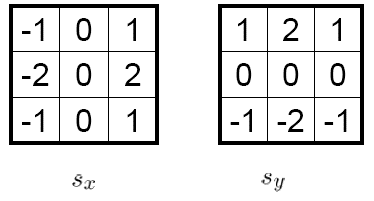
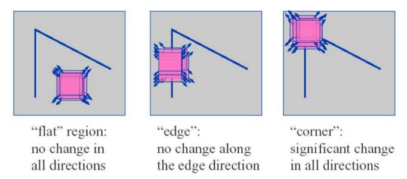
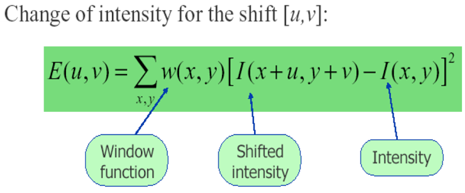
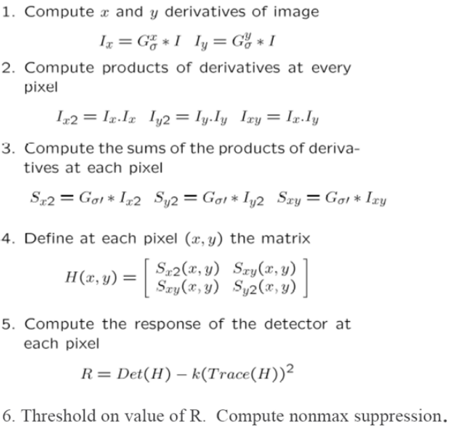
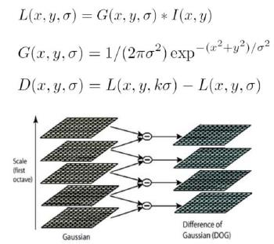
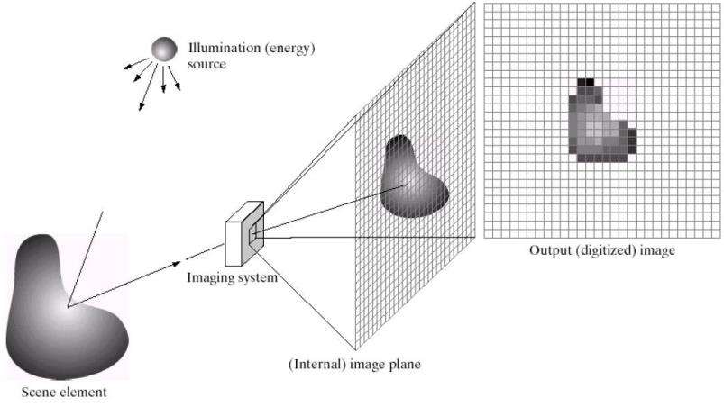
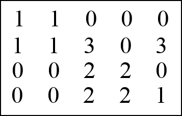
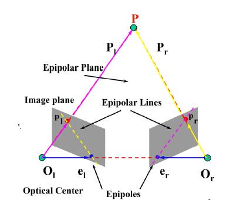
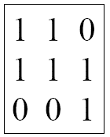
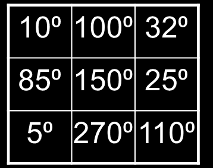

What the exam keeps asking
The 2022 and 2023 midterms were written exams: 10 questions, 100 points. The 114-1 midterm switched to 109 multiple-choice questions but covered the same topics, plus many quick calculations. The two written years repeat each other almost word for word: the Homography/Mosaics question is identical, and the Projection-matrix question grew from 12% to 15%.
| Topic | Unit | 2022 | 2023 | 114-1 (questions) | Priority |
|---|---|---|---|---|---|
| Projection matrix P from n 3D–2D pairs; decompose into K, R, T | 3 | Q8 · 12% | Q8 · 15% | 76, 84, 92, 93, 97 | Always |
| Homography & Mosaics (conditions, linear system) | 3 | Q7 · 12% | Q9 · 12% | 69, 90, 99, 108 | Always |
| PCA & Eigenface (covariance, reduction, recognition) | 2 | Q5 · 12% | Q5–6 · 10% | 16–19, 51–57, 81, 85, 98, 100, 105 | Always |
| K-means clustering | 2 | Q10 · 9% | Q7 · 10% | 63, 64, 83, 86 | Always |
| Harris Corner Detection (+ Sobel) | 2 | Q3 · 5% | Q2 · 16% | 11–14, 45, 46, 58, 59, 89, 106 | Always |
| Definition of CV, 5 applications, 5 challenges | 1 | Q1 · 10% | Q1 · 12% | 1, 7 | Free points |
| Co-occurrence matrix & texture features | 2 | Q2 · 12% | Q3 · 4% | 20, 21, 47, 48, 79 | Frequent |
| SIFT, DoG | 2 | Q4 · 6% | — | 22, 60–62, 78, 82, 94, 104 | Frequent |
| HoG | 2 | — | Q4 · 8% | 49, 50, 107 | Frequent |
| World → Camera → Film → Pixel coordinates, K[R|T] | 3 | Q6 · 12% | (inside Q8) | 28, 30, 31, 39, 67, 68, 72, 74, 88, 109 | Frequent |
| Image formation: 4 factors, optics, photometry, sensor | 3 | — | Q10 · 13% | 24–27, 32–38, 71, 95, 101 | Frequent |
| Epipolar geometry (figure, epipolar constraint) | 4 | Q9 · 10% | — | 103 (stereo depth) | Study well |
| Bag-of-Features, Spatial Pyramid Matching | 2 | — | — | 23, 65, 87 | MCQ |
| Camera calibration (chessboard, Zhang) | 3 | — | — | 91 | MCQ |
Common ways to lose points
Co-occurrence: direction of d
d = (drow, dcol) goes from pixel i to pixel j. Valid pairs = (rows − |drow|) × (cols − |dcol|); this is the denominator of Nd. Always check the cells sum to that count.Sobel: correlation or convolution
True convolution flips the mask 180°. The 2023 key accepts both. State which one you use and whether you zero-pad.PCA: divide by n − 1
Sample covariance divides by n − 1. Subtract the mean first. The eigenvector with the largest λ is the principal component.Degrees of freedom
Homography 3×3: 8 DoF, needs ≥ 4 pairs. Projection P 3×4: 11 DoF, needs ≥ 6 pairs (2 equations per pair). F: 7 DoF. E: 5 DoF.Which eigenvector?
PCA: largest λ. Solving AP = 0 (for P, H, F, calibration b): eigenvector of AᵀA with the smallest λ.QR is applied to M⁻¹
M = KR is the left 3×3 of P. QR(M⁻¹) = QR gives K = R⁻¹ and Rrot = Q⁻¹ = Qᵀ, then T = K⁻¹P₄.Unit 1 · Introduction
Definition: Computer Vision is the set of methods to acquire, process and analyze images and videos so that a computer understands the real world. Goal: produce numerical or symbolic information; in short, extract useful information.
Applications / tasks (list 5)
- Image classification, object detection/recognition
- Face recognition, vehicle re-identification
- Action / gesture recognition, emotion detection
- Image segmentation, scene analysis
- 3D reconstruction, augmented reality, anomaly detection
7 challenges
- View point variation
- Illumination
- Occlusion
- Scale
- Deformation
- Background clutter
- Intra-class variation
Fundamental challenges
- Input space is high dimensional
- The mapping from images to models/actions is nonlinear; the optimal mapping is unreachable
- Generalization from few examples
- Finite memory and computational time
Current trend: deep learning replaces the conventional feature extraction step (Input → Feature extraction → Learning algorithm → Model → Output).
Unit 2 · Feature Extraction
By level: Low-level (histogram, gradient, convolution) · Mid-level (statistical texture, LBP, co-occurrence, Laws, Gabor, HoG, PCA, Harris) · High-level (SIFT, Bag-of-Features, SPM). By target: color, texture, shape, global features.
Pixels, histograms, point processing
- A pixel is the smallest element of an image. 8-bit grayscale: values 0–255 (255 = white), 1 byte per pixel. RGB = 3 layers, 3 bytes per pixel.
- 300×200 image: 60,000 pixels. Grayscale: 60,000 bytes. RGB: 180,000 bytes.
- Point processing s = T(r): contrast stretching, thresholding (gives a binary image).
- Histogram: h(i) = vi for min ≤ i ≤ max, a discrete function describing the frequency distribution. For a 3×3 image: x-axis 0–255, y-axis 0–9.
Image gradient, Sobel, convolution, Gaussian

- The gradient points in the direction of the largest intensity increase; its length is the rate of change. The gradient direction is perpendicular to the edge.
- Slide examples: vertical edge (dx = 255, dy ≈ 0) gives 0°; horizontal edge (dx ≈ 0, dy = −255) gives −90°; dx = dy = 255 gives 45°.
- Convolution: each output pixel is a weighted sum of neighbouring input pixels; the coefficient matrix is the convolution mask (filter). N×N image, k×k mask, no padding: output (N − k + 1)².
- Gaussian filtering blurs (smooths); coefficients get smaller away from the centre of the mask.
Texture features
Texture = spatial arrangement of colors or intensities; a set of texels in a regular or repeated pattern.
Statistical: edge density and direction
Local Binary Pattern (LBP)
For each pixel p, visit its 8 neighbours clockwise from the top-left; bit = 0 if the neighbour ≤ p, otherwise 1. The texture is represented by the histogram of these 8-bit numbers.
Co-occurrence matrix
Cd(i, j) = number of pixel pairs (p, q) with q = p + d, I(p) = i, I(q) = j, where d = (drow, dcol). The matrix is L×L for L gray levels. Nd = Cd / sum.
Slide example: a 6×4 image with d = (3, 1) has 3 × 3 = 9 pairs, Cd = 103202001, Nd = Cd/9. How to choose d is still an open question (tiny, medium or large texels).
Laws' texture energy
- Filter the image with texture filters (2D masks = outer products of 1D masks L5 Level, E5 Edge, S5 Spot, R5 Ripple, e.g. E5L5).
- Compute texture energy: sum the absolute filter responses in a neighbourhood around each pixel.
- Combine symmetric pairs (e.g. E5L5 + L5E5) to achieve rotational invariance, giving 9 features.
Gabor filters
Similar to Laws: wavelets at several frequencies (scales) and orientations, e.g. 4 scales × 8 orientations, or 5 × 8.
HoG (Histogram of Oriented Gradient)
Idea: local appearance and shape can be described by the distribution of gradients and their directions. Suited to object detection, especially human detection.
- Gradient computation
- Orientation binning: each pixel votes into a bin by its direction, optionally weighted by magnitude. Bin width = angle range / number of bins (360/9 = 40°, 180/9 = 20°, 360/4 = 90°)
- Descriptor blocks & block normalization
- Similarity measure
Because it works on local cells, HoG is invariant to geometric and photometric transformations except object orientation.
PCA
- cov > 0: both dimensions increase together. cov < 0: one increases while the other decreases. cov = 0: independent (uncorrelated).
The 6 steps of PCA
- Get some data
- Subtract the mean (DataAdjust)
- Calculate the covariance matrix
- Calculate the eigenvectors and eigenvalues of the covariance matrix
- Choose components and form a feature vector: sort by λ descending, keep the first k. This is where the data is compressed.
- Derive the new data: FinalData = RowFeatureVector × DataAdjust
Meaning: eigenvectors are the directions (axes) of the data distribution; eigenvalues are the importance (spread) along each axis. The principal axes are ordered by decreasing variance and are uncorrelated (covariance between any two axes = 0). Dropping eigenvectors loses the information on the lowest-variance axes.
Eigenface
- Training: n labelled images, each a d×1 vector. Compute the mean face m.
- A = mean-subtracted images (d × n). C = AAᵀ/(n − 1), size d × d (30×30 images → 900×900, independent of the number of images).
- Take the k eigenvectors with the k largest eigenvalues. These are the eigenfaces (a basis for face data).
- Project the training images onto the k-dimensional eigenspace.
- Testing: project the test image onto the eigenspace and classify with Nearest Neighbor.
Why NN: from the eigenface view, similar faces have similar linear combinations; from the PCA view, they have similar offsets along each axis. Face recognition challenges: complex background, illumination, head pose, expression, make-up/hair/moustache, skin colour, input clarity and resolution.
Harris Corner Detection

Slide a small window. Flat: no change in any direction. Edge: no change when moving along the edge. Corner: significant change in all directions, so it is uniquely localized and the most stable feature for matching.

| λ₁, λ₂ | R | Region |
|---|---|---|
| both small | |R| small | Flat |
| λ₁ ≫ λ₂ (one large, one small) | R < 0, |R| large | Edge |
| both large, similar | R > 0 large | Corner |
The 6 steps

SIFT
Invariant to scale, orientation and affine distortion; partially invariant to illumination. (David Lowe, ICCV 1999.)

- Scale-space extrema detection: build the DoG pyramid. X is selected if it is larger or smaller than all 26 neighbours (8 in the same scale + 9 above + 9 below). DoG = difference of two Gaussian-blurred images with different σ; computationally cheap; a band-pass filter that removes high frequencies (noise) and some low frequencies (homogeneous areas).
- Keypoint localization: fit a Taylor expansion to find the accurate extremum x̂ = −(∂²D/∂x²)⁻¹ ∂D/∂x; discard low contrast |D(x̂)| < 0.03. Eliminate edges: with λmax = r·λmin, if Tr(H)²/Det(H) > (r+1)²/r with r = 10 (threshold 12.1), discard. Slide example: 832 → 729 → 536 keypoints.
- Orientation assignment: gradient histogram with 36 bins, weighted by magnitude × Gaussian window; the highest peak is the keypoint orientation.
- Keypoint descriptor: 16 histograms (4×4 grid) of 8 bins each → 128-dimensional vector.
Bag-of-Features, K-means, SPM
- Extract features (SIFT)
- Learn the visual vocabulary with K-means clustering
- Quantize features using the vocabulary
- Represent each image by the frequencies of visual words (histogram)
K-means always converges, but possibly to a local minimum, because it depends on initialization. Compare results by SSE (sum of squared distances to the cluster centres): smaller SSE is better.
Drawback of BoF: it loses spatial information. Spatial Pyramid Matching: split the image into 2l×2l cells for l = 0, 1, 2 (1 + 4 + 16 = 21 cells), compute a BoF histogram in each cell, and concatenate.
Unit 3 · Image Formation

The 4 physical parameters of image formation
Geometric
Type of projection (perspective, orthographic); camera pose (position and orientation).Optical
Lens type, focal length, field of view, aperture; distortion, depth of field, vignetting.Photometric
Type, direction and intensity of light reaching the sensor; surface reflectance (BRDF, Lambertian, specular, Phong).Sensor
Sampling: CCD/CMOS convert photons to electrons, Bayer filter, demosaicing, noise, compression.The process: a light source illuminates the scene; the surface reflects part of the light toward the camera (photometric). The imaging system (pinhole or lens) projects it onto the image plane (geometric + optical). The sensor samples and quantizes it into a digital image in pixel coordinates (sensor).
Pinhole camera
- Film placed in front of an object gives a blurred image. A barrier with a small opening (the aperture) reduces blur; the image is inverted.
- All rays pass through one point, the Center of Projection (COP); the image forms on the image plane; the effective focal length f is the distance from the COP to the image plane.
- Smaller pinhole: sharper but dimmer image.
- The human eye: the iris controls the pupil (the aperture); the "film" is the retina (rods and cones).
4 coordinate systems and the transformation chain
| System | Meaning | To the next system |
|---|---|---|
| World | The original 3D frame of the scene, chosen freely | Extrinsic: rotation R, translation T |
| Camera | 3D, origin at the camera's COP, Z along the optical axis | Perspective projection (divide by Z) |
| Film / Image | 2D on the image plane, physical units (mm) | Intrinsic K: unit scaling, principal-point offset, skew |
| Pixel | 2D in pixels of the digital image (e.g. 200×300) | — |
- T moves the world origin to the camera position and R rotates the world axes onto the camera axes; together they take world to camera coordinates (extrinsic, 6 DoF). The 3×4 projection drops the 4th coordinate, projecting 3D onto 2D. K converts film coordinates to pixels.
- K is upper triangular. (cx, cy): principal point; fx, fy: pixels per unit length; s: skew (usually 0, needed when the pixel axes are not perpendicular); fy/fx: aspect ratio.
- Multiplying P by a scalar D leaves the image coordinates unchanged (up to scale).
- A rotation matrix is orthogonal: R⁻¹ = Rᵀ. Rz(θ) = cosθ−sinθ0sinθcosθ0001.
Finding the projection matrix P from n pairs
P has 12 entries but is defined up to scale, so it has 11 DoF and needs at least 6 point pairs. Evaluate with projection error = (1/N) Σ ‖xgt − PXi‖².
Decomposing P into K, R, T
The inverse of an upper-triangular matrix is still upper triangular and the inverse of an orthogonal matrix is still orthogonal, so the factors have exactly the K·R form.
Projection properties
- Many-to-one: all points along the same ray map to the same image point.
- Points map to points; lines map to lines (collinearity preserved). Distances and angles are not preserved.
- Parallel lines meet at a vanishing point; vanishing points lie on the horizon line. Far objects look smaller.
- Degenerate cases: a line through the COP projects to a point; a plane through the COP projects to a line.
- Orthographic (parallel) projection: distance from COP to the image plane is infinite, (X, Y, Z) → (X, Y); good approximation for telephoto / telecentric lenses.
- Weak perspective: when object depth is small compared with its distance, treat all points as at depth Z₀: x = (f/Z₀)·X.
- Object-centered projection: when tz ≫ ‖p‖, the projected scale depends only on f/tz, so a zoom change is hard to tell from motion toward the camera.
Homography & Mosaics
For a planar scene (Z = 0), drop the 3rd column of P to get a 3×3 H:
Homography conditions (independent of scene structure):
- Both images view the same plane from different angles.
- Both images are taken from the same camera (same position) at different angles.
- The camera is rotated about its COP without any translation.
If the camera also translates, the mapping is in general no longer a homography, except for regions on the same plane (each plane has its own homography).
Mosaics: stitch overlapping images into one large image (a panorama). Method: detect features (e.g. SIFT), match corresponding points between the left and right images, solve for H, warp all images into one coordinate system. Data acquisition requirements: images must overlap; the camera rotates in place (same COP) or the scene is planar; at least 4 corresponding pairs, no 3 collinear.
Applications of homography: mosaics (image–image), removing perspective distortion (image–scene), rendering textures (scene–image).
Camera calibration (planar pattern)
- Use a planar object (chessboard) and take 15–20 images. Because it is planar, each image has a homography H = [h₁ h₂ h₃] = λK[r₁ r₂ t].
- r₁ = K⁻¹h₁, r₂ = K⁻¹h₂. R is orthonormal, which gives 2 constraints: r₁ᵀr₂ = 0 and r₁ᵀr₁ = r₂ᵀr₂.
- Let B = K⁻ᵀK⁻¹ (symmetric, 6 unknowns): h₁ᵀBh₂ = 0, h₁ᵀBh₁ − h₂ᵀBh₂ = 0. N images give Vb = 0 with V of size 2N×6. b is the eigenvector of VᵀV with the smallest λ; then recover K.
Optics
- A lens focuses parallel rays to the focal point, gathering more light while keeping focus. Thin lens: 1/f = 1/u + 1/v (u object distance, v image distance).
- Radial distortion comes from imperfect lenses and is strongest at the edges: barrel (displaced away from the centre) and pincushion (toward the centre). Model: x̂ = x(1 + κ₁r² + κ₂r⁴).
- Depth of field: the range of depths that look acceptably sharp. Smaller aperture → larger DoF; larger aperture → smaller DoF (blurry background).
- Field of view: smaller f → wider angle; larger f → narrower (telescopic).
- Vignetting: reduced brightness or saturation at the periphery compared with the centre.
Photometric
- BRDF (Bidirectional Reflectance Distribution Function): how much of each wavelength arriving from incident direction vᵢ is emitted in reflected direction vr.
- Diffuse / Lambertian: scatters light uniformly in all directions; constant BRDF; shading depends on max(0, n·l) (matte surfaces such as a statue).
- Specular: mirror-like reflection, depends on the viewing direction.
- Phong shading = ambient + diffuse + specular.
Sensor
- A digital camera replaces film with a sensor array of CCD or CMOS cells that convert photons to electrons.
- Bayer grid: each pixel records only one colour channel (50% G, 25% R, 25% B); demosaicing estimates the missing channels from neighbours.
- Issues: noise (especially in low light), compression artifacts, colour fringing, blooming (charge overflowing into neighbouring pixels), oversharpening halos, interlaced scan, more megapixels need better lenses, stabilization.
Unit 4 · 3D Vision & Epipolar Geometry
Stereo: recover 3D by triangulation, the intersection of two rays. It requires calibration and point correspondence. The key question: given p in the left image, where can the corresponding p′ be in the right image?
Baseline
The line joining the two optical centres O and O′.Epipolar plane
The plane through the 3D point P and the baseline.Epipolar lines
Where the epipolar plane intersects the two image planes.Epipoles e, e′
Where the baseline intersects each image plane; equivalently, the image of the other camera's centre. Every epipolar line passes through the epipole.Epipolar constraint: the match of p must lie on the epipolar line l′ (and vice versa). Reason: every 3D point M on the ray O→p projects to p in the left image, but in the right image these points move along exactly one line, the intersection of the plane (O, O′, p) with the right image plane. So the correspondence search is 1D (along a line) instead of 2D. As P varies, the epipolar planes "rotate" about the baseline, forming an epipolar pencil.
From geometry to algebra
| Essential matrix E | Fundamental matrix F | |
|---|---|---|
| Used when | Cameras calibrated (K known), normalized coordinates | K unknown, pixel coordinates |
| Formula | E = [t]ₓR, p̂ᵀE p̂′ = 0 | F = K⁻ᵀ E K′⁻¹, pᵀF p′ = 0 |
| DoF | 5 (R: 3, t: 3, minus 1 for scale) | 7 (rank 2, homogeneous) |
| Epipolar lines | E p′ is the line in the left image; Eᵀp is the line in the right image | F p′ in the left image; Fᵀp in the right image |
| Epipoles | Eᵀe = 0, E e′ = 0 (e ∝ t, e′ ∝ −Rᵀt) | Fᵀe = 0, F e′ = 0 |
The 8-point algorithm
Motion cases
- Converging cameras: epipolar lines converge to an epipole inside or near the image.
- Motion parallel with the image plane: epipolar lines are parallel; the epipole is at infinity.
- Forward motion: the epipole is in the middle of the image (focus of expansion) and epipolar lines radiate from it; e and e′ coincide.
2022 Midterm Solutions
Each answer was recomputed and checked against the reference answer in the exam file. Where the reference is wrong or incomplete, there is a separate note.
Q1. Definition, applications, challenges 10%
a) Methods to acquire, process and analyze images and videos so that computers understand the real world and extract useful numerical or symbolic information.
b) Face detection, action recognition, image classification, 3D reconstruction, gesture recognition.
c) View point variation, illumination, occlusion, scale, deformation (also: background clutter, intra-class variation).
Q2. Texture / shape / color features and co-occurrence 12%
a) LBP, Gabor filters, co-occurrence matrix (or Laws). b) HoG. c) RGB (color) histogram.

d) d = (−1, 1): j is one row up and one column right of i.
Number of pairs = (4 − 1) × (5 − 1) = 12. Visit i in rows 1–3, columns 0–3, and read j at (r − 1, c + 1):
Matches the reference answer.
Q3. Harris corner 5%
a) Matching needs points that can be localized uniquely. In a flat region, shifting the window in any direction changes nothing. On an edge, shifting along the edge changes nothing, so the point can "slide" along it. Only at a corner does the content change strongly in all directions, so its position is stable and unique.
b) Compute E(u,v) ≈ [u v] H [u v]ᵀ with the structure tensor H and look at its eigenvalues, or at R = det H − k(trace H)²: both λ small (|R| small) → flat; one large, one small (R < 0) → edge; both large (R > 0 large) → corner.
Q4. DoG and SIFT 6%
a) DoG is the difference of two Gaussian-filtered images with different σ (e.g. σ and kσ): D(x,y,σ) = L(x,y,kσ) − L(x,y,σ). It is a band-pass filter approximating the Laplacian-of-Gaussian and is cheap to compute.
b) Build a 36-bin gradient-orientation histogram around the keypoint (weighted by magnitude × Gaussian window) and take the highest peak as its orientation.
c) Detection: find extrema in the DoG pyramid (compared with 26 neighbours), refine the location with a Taylor expansion, discard low contrast (|D| < 0.03), discard edge points (curvature ratio, r = 10). Representation: assign the orientation, split the region around the keypoint into 4×4 cells, each with an 8-direction histogram, giving a 128-D vector (rotated to the dominant orientation, so rotation invariant).
Q5. PCA 12%
x₁ = (0, 2, 1), x₂ = (1, 1, 6), x₃ = (2, 0, 2).
a) The eigenvectors of the covariance matrix are the directions of the data distribution (principal axes); the eigenvalues give the spread (importance) along each axis.
d) Training: use labelled faces, compute the mean and C, keep the k largest eigenvectors as eigenfaces, project the training images onto the eigenspace. Testing: subtract the mean, project the test image onto the eigenspace, use Nearest Neighbor (SAD/SSD) to find the closest training image and assign its label.
Q6. Coordinate systems and the matrix chain 12%
a) See the table of the 4 coordinate systems in the Theory tab.
T moves the origin to the camera position and R aligns the world axes with the camera axes (world → camera). Π is the projection that drops the 4th coordinate, projecting 3D onto the image plane (camera → film). K converts units and shifts to the principal point, with skew (film → pixel). Homogeneous coordinates make every step a matrix multiplication.
Q7. Mosaics with homography 12%
a) Stitch several overlapping images into one large image (panorama).
b) When the conditions hold, one image maps to the other by a 3×3 H. Estimate H from corresponding points in the overlap, then warp all images into one coordinate system.
c) (1) Both images view the same plane from different angles; (2) both images come from the same camera (same position) at different angles; (3) the camera rotates about its COP without translation. The reference answer lists only 2; write all 3.
d) Data requirements: overlapping images, taken by rotating in place (or of a planar scene), at least 4 corresponding pairs (from feature matching), no 3 collinear. Linear system: see Homography in the Theory tab. Each pair gives 2 rows of a 2N×8 matrix; solve Ah = b (least squares if N > 4).
Q8. Projection matrix 12%
a) See how to build A·P = 0 and pick the smallest eigenvector of AᵀA in the Theory tab.
b) Three pairs (1,2,0)→(0,4), (2,0,3)→(1,2), (1,1,4)→(2,3):
Matches the reference. Add one sentence: 3 pairs give only 6 equations, not enough for 11 DoF; in practice you need at least 6 pairs.
c) P = [M | P₄], M = KR, P₄ = KT. QR(M⁻¹) = QR ⇒ K = R⁻¹, Rrot = Q⁻¹, T = K⁻¹P₄. (The reference has a typo "R = K[R|T]"; it should be P = K[R|T].)
Q9. Epipolar geometry 10%

a) Mark: the two centres Ol, Or, the baseline, the point P, the epipolar plane (triangle Ol–Or–P), the epipolar lines, and the epipoles el, er.
b) The match of p must lie on the epipolar line l′. Reason: every 3D point on the ray O→p projects to p, and this ray together with the baseline spans the epipolar plane; its image in the right camera is the intersection of that plane with the right image plane, i.e. l′. Algebraically: pᵀE p′ = 0.
Q10. 1-D K-means 9%
Data: 1, 2, 4, 6, 7, 8, 12, 16, 20, 30. Exact computation (no rounding):
| Part | Iter | Clusters | New centres |
|---|---|---|---|
| a) 4, 16 | 1 | {1,2,4,6,7,8} {12,16,20,30} | 4.67, 19.5 |
| 2 | {1,2,4,6,7,8,12} {16,20,30} | 5.71, 22 | |
| 3 | unchanged, converged | 5.71, 22 | |
| b) 1, 6 | 1 | {1,2} {4,…,30} | 1.5, 12.875 |
| 2 | {1,2,4,6,7} {8,12,16,20,30} | 4, 17.2 | |
| 3 | {1,2,4,6,7,8} {12,16,20,30} | 4.67, 19.5 | |
| 4 | {1,…,12} {16,20,30} | 5.71, 22 | |
| 5 | unchanged, converged | 5.71, 22 | |
| c) 2, 7, 20 | 1 | {1,2,4} {6,7,8,12} {16,20,30} | 2.33, 8.25, 22 |
| 2 | unchanged, converged | 2.33, 8.25, 22 |
2023 Midterm Solutions
Q1. Definition, applications, challenges 12%
Same as 2022 Q1. List 5 of the 7 challenges: view point variation, illumination, occlusion, scale, deformation, background clutter, intra-class variation.
Q2. Sobel and Harris 16%
3×3 image = 200200200000000, zero-padded to 5×5.
a) Using correlation (mask applied as is, not flipped):
b) The 6 steps of Harris: see the Theory tab.
Q3. Co-occurrence 4%

The figure puts j at the top-left cell and i one row down, two columns right, i.e. j = i + (−1, −2). (The question writes D = (−1, −3), but the figure shows a 2-column offset, which is the only one that fits a 3-wide image.)
Q4. HoG with 4 channels over 0–360° 8%

Magnitudes 510515105201020. Each bin is 90°.
| Bin | Pixels | a) Count | b) Magnitude sum | b) Normalized /100 |
|---|---|---|---|---|
| 0–90° | 10, 32, 85, 25, 5 | 5 | 5+5+15+5+20 = 50 | 0.50 |
| 90–180° | 100, 150, 110 | 3 | 10+10+20 = 40 | 0.40 |
| 180–270° | 270 (upper edge included) | 1 | 10 | 0.10 |
| 270–360° | — | 0 | 0 | 0 |
The reference puts 270° in the "180–270" bin. With half-open bins [270, 360) it would fall in the last bin; state your boundary convention.
Q5. Size of the covariance matrix 4%
20×20 images → 400×1 vectors. 10 people × 5 images = 50 images, so A is 400×50 and C = AAᵀ/(50 − 1) is 400 × 400.
Q6. Linear combination and Eigenface 6%
b) Each (mean-subtracted) face M ≈ Σ aᵢuᵢ, where uᵢ are the eigenfaces (columns of the eigenvector matrix) and aᵢ = Mᵀuᵢ are the projection coefficients. The vector (a₁, …, ak) is the feature used by NN. The reference calls aᵢ "eigenvalues", which is wrong.
Q7. K-means with K = 3 10%
Data 0, 2, 5, 8, 10, 15, 24, 30, 50, 60, 80, 100. No initial centres are given; the reference uses 8, 30, 80.
b) Compute SSE = ΣΣ‖p − cᵢ‖² (sum of squared distances from each point to its cluster centre) for each result. The result with the smaller SSE is better (tighter clusters).
Q8. Finding K, R, T from n 3D–2D pairs 15%
The highest-scoring question. Present all 4 parts: (1) the model x = K[R|T]X = PX; (2) cross-multiply to get 2 equations per pair, stack into A (2N×12)·P = 0; (3) min‖AP‖² with ‖P‖ = 1; AᵀA is symmetric PSD and PᵀAᵀAP = λ, so choose the eigenvector with the smallest λ; (4) P = [M|P₄], QR(M⁻¹) gives K = R⁻¹, R = Q⁻¹, T = K⁻¹P₄. Details in the Theory tab.
Q9. Mosaics with homography 12%
Identical to 2022 Q7. The 2023 reference lists all 3 homography conditions.
Q10. Image formation 13%
a) An illumination source lights the scene element. The surface reflects light, according to its properties, into the imaging system (e.g. pinhole or lens). The system projects it onto the internal image plane (film coordinates); the sensor samples it and, through the intrinsic parameters, produces the output digital image in pixel coordinates.
b) Geometric, Optical, Photometric, Sensor. See the four cards at the start of Unit 3 in the Theory tab.
"Course Practice" problems from Unit 2
Many 114-1 calculation questions come straight from these.
| Problem | Solution |
|---|---|
| 2-1 Pixel (grayscale 300×200) | 60,000 pixels, 60,000 bytes |
| 2-2 Color image 300×200 | 60,000 pixels, 180,000 bytes |
| 2-3 Histogram of 112551125511255 | x-axis 0–255, y-axis 0–9. h(1) = 6, h(255) = 3, all other values 0. |
| 2-4 Sobel on 002000020000200 (zero-padding, correlation) | Sx = 060000800006000, Sy = 0−200−4000000200400. At the centre: dx = 800, dy = 0, so θ = 0° (vertical edge). |
| 2-5 Co-occurrence of 110111001 | 2 gray levels → 2×2 matrix. Assuming d = (0, 1) (j directly right of i): C = 1113, 6 pairs. (The d figure on the slide is not in the text file; check the direction.) |
| 2-6 HoG, 9 channels over 0–360° (40° bins) | Directions [10,100,32,85,150,25,5,270,110], magnitudes [10,15,1,20,5,5,10,12,25]. a) Counts: [0–40): 4 · [80–120): 3 · [120–160): 1 · [240–280): 1, others 0. b) Magnitude-weighted: [0–40): 10+1+5+10 = 26 · [80–120): 15+20+25 = 60 · [120–160): 5 · [240–280): 12. |
| 2-7 Covariance (8 people × 10 images, 30×30) | 900 × 900 |
| 2-8 PCA | Eigenvectors show the directions of the patterns (principal axes) in the data. Compression happens in step 5 (choosing components, dropping small-λ eigenvectors) and step 6 (projecting the data). |
| 2-9 Matrix decomposition | See 2023 Q6a: B·C = c₁·(column 1) + c₂·(column 2). |
| NN: Mary (5,2), John (0,2), Andy (6,1), mysterious guy (8,3) | SAD: Mary 3+1 = 4, John 8+1 = 9, Andy 2+2 = 4 → tie between Mary and Andy. SSD: Mary 9+1 = 10, John 64+1 = 65, Andy 4+4 = 8 → Andy. |
| Harris at (3,3) of the 5×5 image, 3×3 window of ones | Assuming 1-based indexing (centre is the 0 at row 3, column 3), Sobel correlation, zero-padding, k = 0.04: H = 2676969187, R = 49929 − 4761 − 0.04·454² ≈ 36923 > 0 (corner). |
| SIFT, r = 10 | Threshold (r+1)²/r = 12.1. (2, 40): 42²/80 = 22.05 > 12.1 → discard (ratio 20 > 10). (1, 5): 36/5 = 7.2 < 12.1 → keep (ratio 5 < 10). |
| K-means K = 2 on 0, 2, 3, 5, 8, 10 (centres 0, 10) | Iter 1: {0,2,3,5} {8,10} (5 is a tie, put in cluster 1), centres 2.5, 9. Iter 2: unchanged, converged. |
114-1 multiple-choice practice
All 109 questions with the reference key. Click an option to check it. Calculation questions include a short worked answer. The 4 questions marked "free" in the original key (everyone got the points) show the correct answer from the slides.